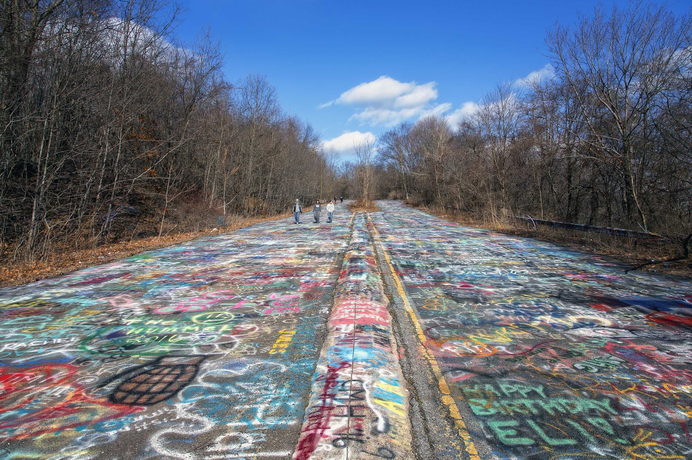
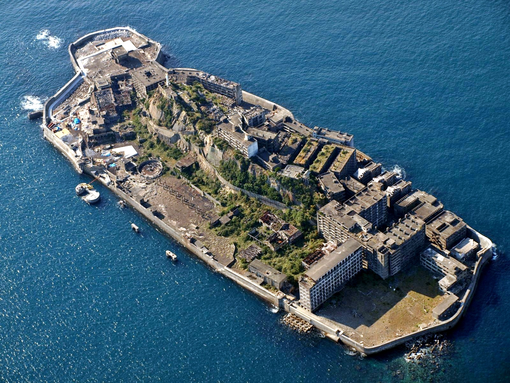
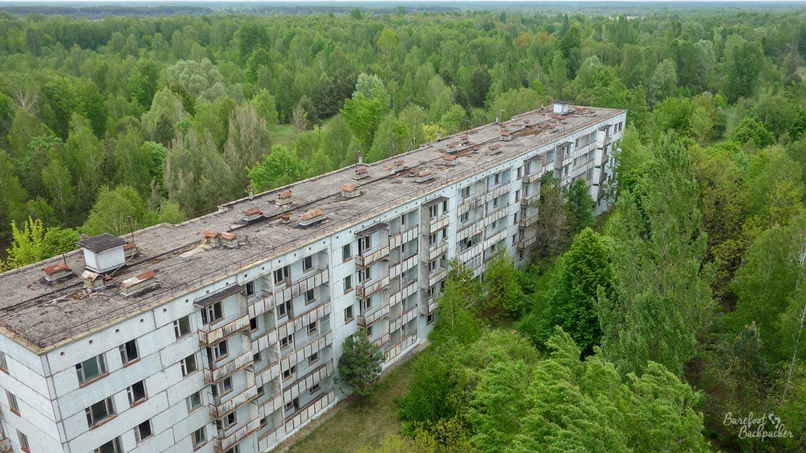

// Abandoned Locations
There are abandoned places all over the world. Some have been left behind for decades, while others have only recently been abandoned.
[Centralia, Pennsylvania]

Centralia was once a small mining town in Pennsylvania. A mine fire that began in 1962 eventually caused most of the town's residents to leave. Only a small number of people still live there today.
[Hashima Island, Japan]

Hashima Island was once home to thousands of people who worked in an underwater coal mine. The mine closed in 1974 and the island was abandoned.
[Pripyat, Ukraine]

Pripyat was built near the Chernobyl Nuclear Power Plant. The city was evacuated in 1986 after the Chernobyl disaster. Many of its buildings and streets remain abandoned today.